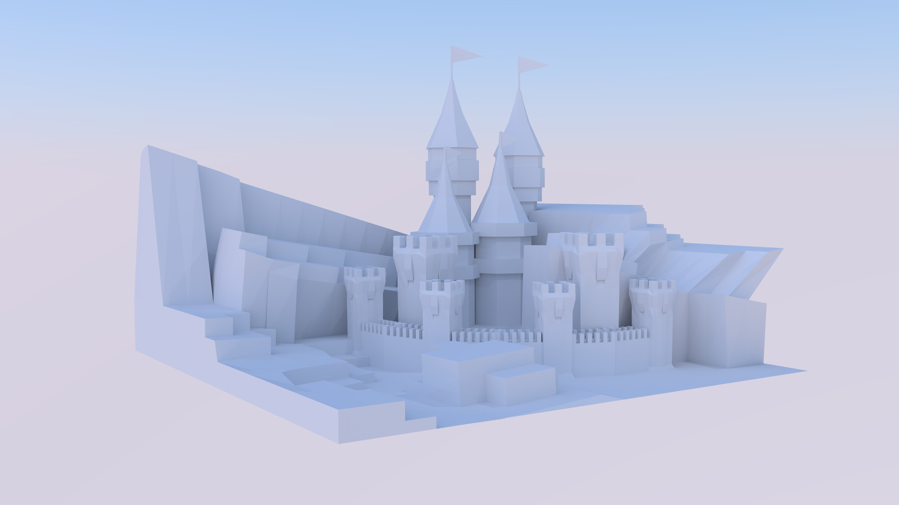
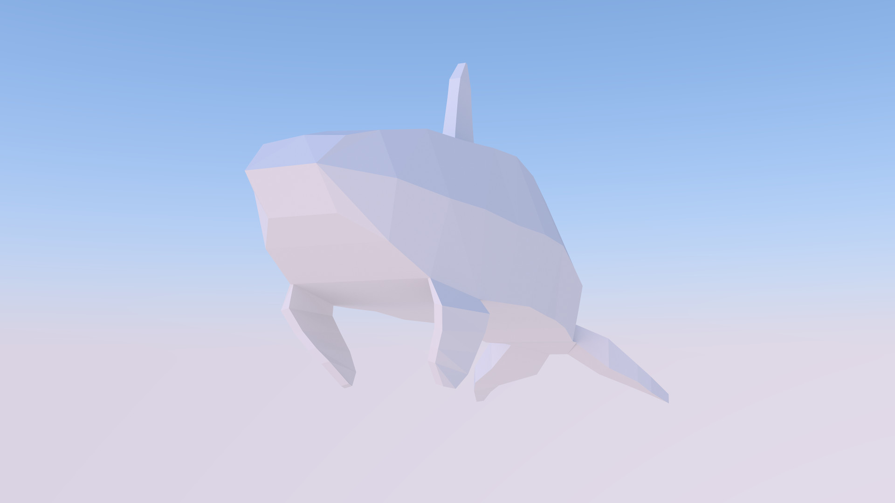

Physically Based Rendering
Modelling - Animation
The Backstory
This is a collection of projects from the field of PBR. I created all models with the free software Blender and rendered them with the built-in pathtracer Blender Cycles.

Low Poly Castle
2 days

Low Poly Orca
1 day
Jaguar D-Type MWS 301
multiple weeks
All materials and textures were created from scratch using real image reference.
Frozen Carrot
Animation short film created within 2 months in a group of 3 people in the subject 'Modelling and Animation 1'. The rendering time was 2 days spread over several computers.